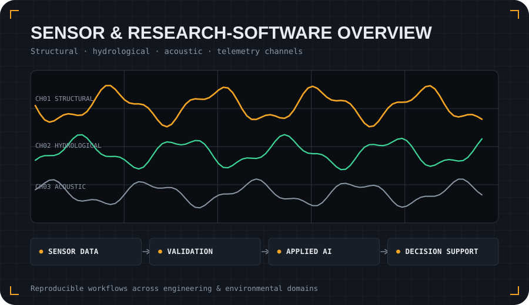

About
Research software for data-rich engineering and environmental systems.
My work sits at the intersection of machine learning, sensor data, simulation, scientific modelling and engineering domain knowledge. I focus on tools that help engineers and researchers inspect, validate and interpret complex measurements.

What I build
- Structural-test analysis workflows for blade fatigue, natural-frequency helpers and sensor QA/QC.
- Urban drainage and water-network telemetry tools using synthetic examples and public-safe reports.
- Digital-twin prototypes that connect sensor data, models and automated reports.
- Anomaly-detection workflows for acoustic, operational and experimental measurements.
- Scientific-ML workflows for geomorphology, hydrology and spectral/latent-space analysis.
- Collaborative remote-sensing workflows for environmental monitoring and reproducible annotation.
How I work
I prefer repositories that are easy to audit: clear problem statements, quick starts, synthetic or public example data, visual outputs, assumptions and limitations.
For confidential engineering or research data, I use synthetic, reduced or public datasets to demonstrate the workflow without exposing sensitive information.
Core themes
Academic profiles
For publications, institutional profile information and persistent researcher identity, see: